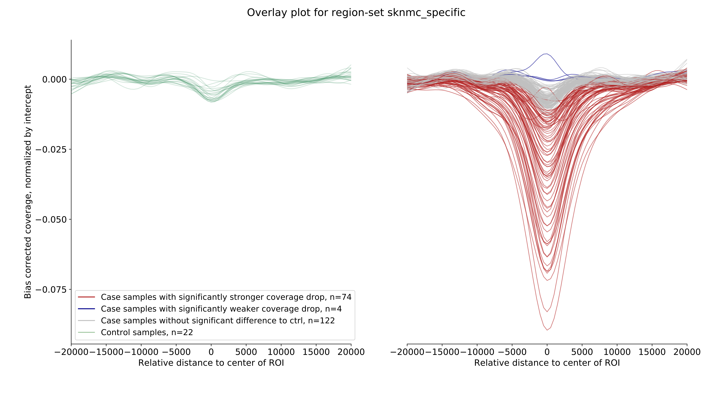
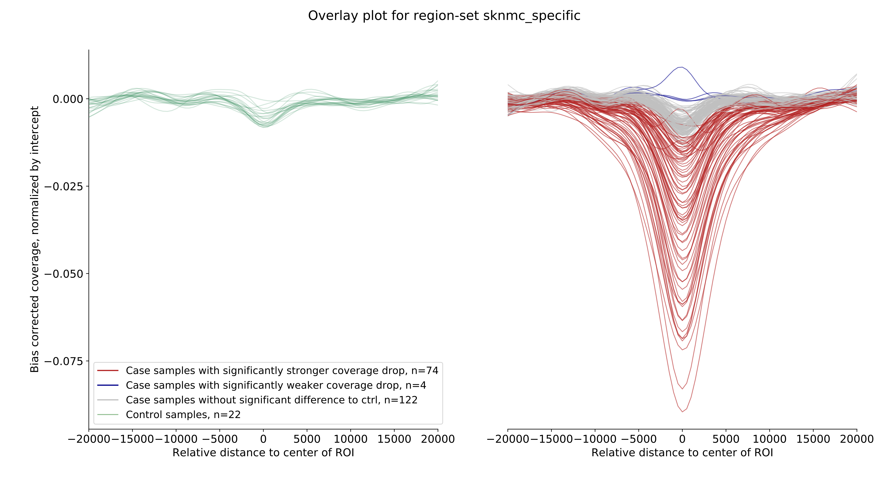
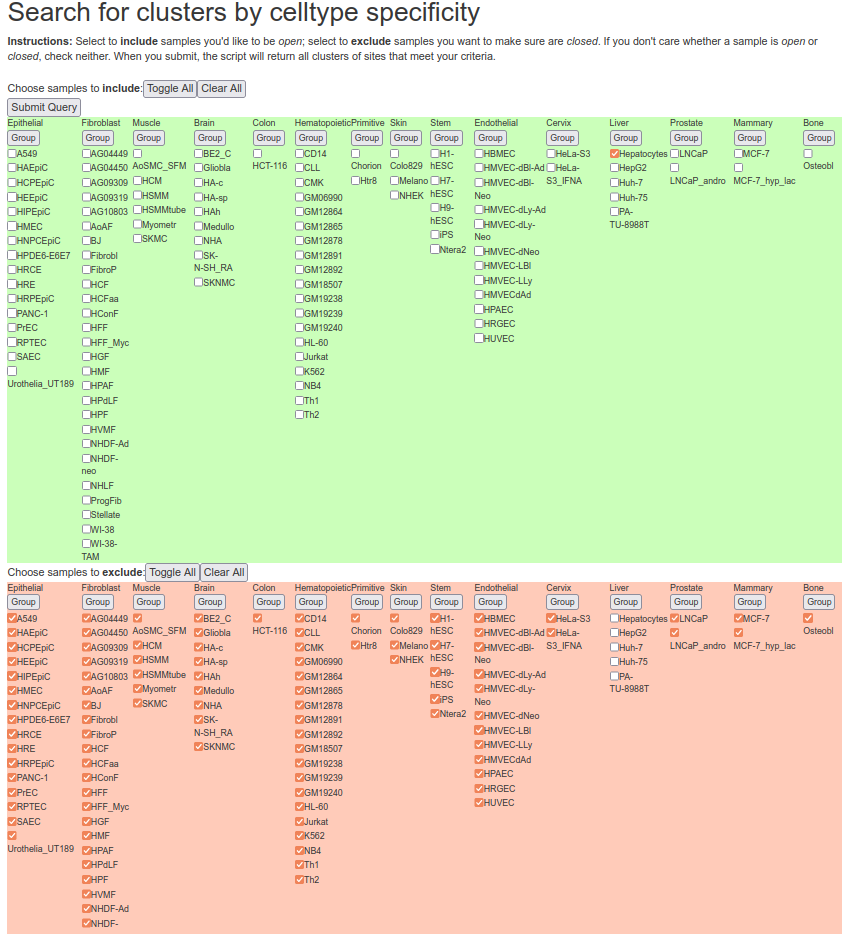
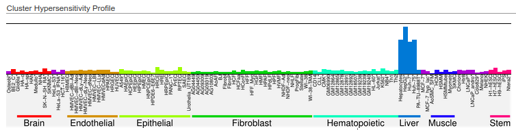
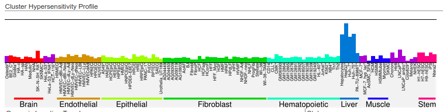

Introduction¶
LIQUORICE is a command-line-tool and python package for bias correction and quantification of changes
in coverage around regions of interest in cfDNA WGS datasets. LIQUORICE can be used to detect and quantify
tissue or cancer-specific epigenetic signatures in liquid biopsies. This allows accurate quantification of the
fraction of tumor-derived cell-free DNA, as demonstrated in our recent publication.
Motivation¶
The fragmentation of cell-free DNA (cfDNA) obtained from liquid biopsies is non-random, and contains information about the epigenetic state of its cell-of-origin. DNA in nucleosomes is protected from cleavage, resulting in an increase in sequencing coverage in genomic regions that are occupied by nucleosomes. If a set of genomic regions is specifically accessible in a cell-type of interest (such as a certain cancer type), an observed decrease in coverage around these regions can indicate that cells of this type are present in the organism, and are releasing cfDNA into the bloodstream.
Potential application areas¶
LIQUORICE could be useful for a variety of cfDNA-related analysis tasks:
Cancer detection, classification, monitoring and survival prognosis (as demonstrated in our recent publication)
Classification of cancers of unknown primary
Location of metastasis
Tissue damage monitoring for transplantations, heart attack, and other diseases
What LIQUORICE does¶
LIQUORICE addresses two problems regarding the quantification of epigenetic signatures from a coverage signal:
Coverage is influenced by bias-factors, such as GC-content, mappability and other factors related to sequence composition
The coverage signal needs to be summarized over all regions in a region-set, and needs to be quantified as a number that is robust and comparable between samples.
In a first step, LIQUORICE trains a bias-model, which learns the association between bias-factors and coverage. Then,
the trained model is used to correct the coverage signal in the regions of interest. Finally, the signal is
aggregated between regions and quantified by fitting a model to the data. LIQUORICE produces tables as well as plots
that allow for the visual inspection of biases and of the coverage signal. Furthermore, a summary tool is included,
which allows for the convenient comparison of signals between samples and region-sets.
Here are a few examples of LIQUORICE’s output:

 

{kind=link}
Region-sets¶
In the context of LIQUORICE, we refer to a region-set as a set of genomic regions with similar properties. This
could be, e.g., enhancers or DNaseI-hypersensitivity sites that are specific for a cell-type, cancer-type, or tissue.
Useful ressources to obtain such region-sets include http://dnase.genome.duke.edu/ and ENCODE.
Here is an example on how we obtained liver-specific DNase-I-hypersensitivity sites from the http://dnase.genome.duke.edu/celltype.php interface. First, we required all non-liver cells to be “closed”, and we required hepatocytes to be “open” at a given DHS:
{kind=link}
Then, we selected two clusters that have an adequate tissue-specific accessibility pattern:
http://dnase.genome.duke.edu/clusterDetail.php?clusterID=1066
{kind=link}
and http://dnase.genome.duke.edu/clusterDetail.php?clusterID=1115
{kind=link}
We downloaded the .bed files (with all regions) from these clusters, and finally, we concatenated the downloaded files, merging the DHSs of these two clusters in order to get our final liver-specific DHS set. Note that the regions on the database are stored in hg19 coordinates - you can use LiftOver (https://genome.ucsc.edu/goldenPath/help/hgTracksHelp.html#Liftover) to convert the data to hg38.
How to use LIQUORICE¶
The easiest way to use LIQUORICE is via its command-line interface. Also
check out the convenient summary tool if you are analyzing multiple samples or
region-sets.
If you require more control about the steps performed by LIQUORICE, check out the LIQUORICE python package - you can start by looking at the function-level documentation and source code of the liquorice.LIQUORICE module as well as the the liquorice.utils.Workflows module.
More details on parameters, test examples and usage examples can be found here
Contact¶
If you have any questions about LIQUORICE and how to apply it to your data, create an issue on github or contact peter.peneder@ccri.at - we are happy to hear from you.
Installation¶
LIQUORICE can easily be installed via conda. We recommend installing
LIQUORICE in its own conda environment to keep dependencies clean:
# to install
conda create -e LIQUORICE -c bioconda LIQUORICE
# to activate the environment
conda activate LIQUORICE # or: 'source activate LIQUORICE' for older conda versions
# to run
LIQUORICE <flags and arguments>
Citation¶
If you use LIQUORICE in any published work, please cite:
Peneder, P., Stütz, A. M., Surdez, D., Krumbholz, M., Semper, S., Chicard, M., … & Tomazou, E. M. (2021). Multimodal analysis of cell-free DNA whole-genome sequencing for pediatric cancers with low mutational burden. Nature communications, 12(1), 1-16.